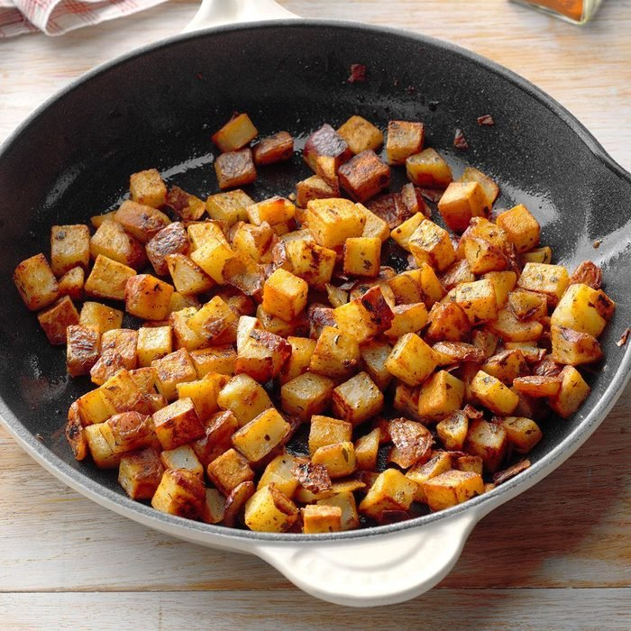

Skillet Red Potatoes
2 tablespoons canola oil
2 medium red potatoes, cooked and cut into 1/2-inch chunks
1/2 teaspoon dried parsley flakes
1/4 to 1/2 teaspoon garlic powder
1/4 to 1/2 teaspoon onion powder
1/4 to 1/2 teaspoon paprika
Procedures
Step 1
In a skillet, heat oil over medium heat.
Step 2
Add potatoes; cook for 10 minutes, stirring occasionally.
Step 3
Stir in remaining ingredients.
Step 4
Cook and stir until potatoes are browned and tender, about 5 minutes longer.
Previous
Next
Back